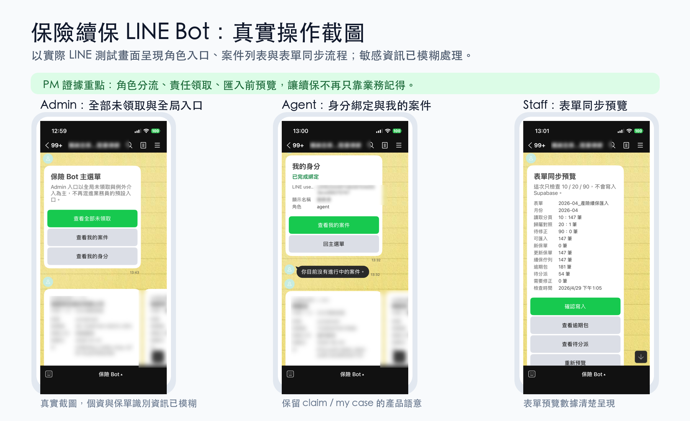

保險續保 LINE Bot PM Case Study
B2B 工具 PM 實戰｜PRD 假設驗證與需求校準
為台灣小型產險經紀辦公室打造的續保管理系統。
這份 case study 的重點不是最終的 PRD，而是中間那次關鍵的自我校準，
以及修正所依據的判斷邏輯。以 PRD v1.0 作為「待驗證假設」，
透過《The Mom Test》紀律的訪談，將產品定位、Persona 與流程精準校準為 v2.0。
NestJS
Supabase
LINE Bot SDK
PostgreSQL
TypeScript
ADR-Driven
The Mom Test
B2B SaaS

實際運作的 LINE Bot
Admin 全局入口、Agent 案件領取、Staff 表單同步預覽（敏感資訊已模糊處理）。這是物證，不是產品介紹：用來證明本案的責任流轉設計真的跑得起來。
Case Brief
這不是單純做 LINE Bot，而是把模糊的續保提醒需求校準成責任流轉系統。
我的重點放在需求訪談、產品定位、MVP 範圍、資費估算與 ADR 決策，呈現我如何從初始假設修正到更可落地的產品定義。
PM 能力證據
- 用《The Mom Test》修正 PRD v1.0 假設
- 把功能範圍切成 Phase 1 MVP 與非目標
- 建立 Persona、資料模型、技術棧與導測時程
- 用 ADR 留下決策背景、取捨與後果
觸發這個專案的問題
「我們常常就是 Email 看一看、保單登記一下，結果就漏掉了。曾經有保戶是業務沒主動聯繫、自己又沒留意到保險公司的通知，結果產險就斷掉了，最後變成客訴。」
來自小型保經辦公室經營者訪談
保險的續保理論上有雙重通知：產險公司會在到期前依規定通知保戶，保經業務員也應主動聯繫。但實務上這兩道防線會同時失效：業務沒跟進（第一道失效）加上保戶忽略了產險的簡訊、Email 或紙本通知（第二道失效），保單就真的斷保，輕則客訴、重則斷保期間出險無法理賠。
這不是偶爾的疏忽，而是把責任壓在「業務記得」與「保戶留意」這兩個都不可靠的人為環節上。我判斷這在小型辦公室是普遍狀況，值得用系統來解。
潛在市場分析（TAM）
潛在市場分析（NT$ / 年）
10 至 33M
不會成獨角獸但有市場
為什麼這個小市場值得做
01 · 市場分散
沒人專做這個利基
市場由數百家各自獨立的小辦公室組成，規模太小、太分散，大型 SaaS 玩家看不上，沒有人專門為「小型保經辦公室的內部協作」做工具。
02 · 法定通知不夠
產險會通知，但會被忽略
產險公司依規定會在到期前通知保戶，但簡訊、Email、紙本都可能被忽略。法定通知不是萬無一失，所以保經的主動跟進才是關鍵防線。
03 · AI 落點
紅杉資本專文點名
保險經紀屬於「高智力佔比 × 流程極度破碎」，是 AI 落地的理想市場。
競品格局
PIRANS 續保小幫手
個人業務員工具
技術為 LINE Bot 加 Google Sheets，無 AI。驗證了「小辦公室願意付費」，但無團隊協作機制。
加盟保經後台
總公司管轄加盟店
祥富、看見等系統功能齊全，但設計目的是「總公司管理加盟店」，不是「單一辦公室內部協作」。
★ 我看到的空缺
辦公室層級的責任流轉
把「窗口 → 行政 → 業務員 → 客戶」做成強制性責任流轉系統，填補 PIRANS 與加盟系統之間的空白。
我這次的判斷：與其用空白問卷問客戶「你想要什麼」，我直接拿初版 PRD 給他看、用它當話頭。一份具體的草稿比抽象的問題更能引出客戶藏在腦袋裡的業務細節，也促成了我跟關鍵使用者（行政人員）的對話。這個判斷直接啟動了隔天的行政訪談，以及這次以草稿為基礎的全面修正。
V1 → V2 假設校準圖
我把初版 PRD 當成待驗證假設，而不是正確答案。訪談的價值，是把「我想像中的流程」校準成真實辦公室會跑得動的產品定義。
PRD V1 · 待驗證假設
校準前的產品想像
Persona：2 角色
業務員 + Admin，預設業務會主動管理續保。
入口：業務上傳 PDF
把保單解析視為主入口，AI 被當成主要差異化。
流程：追蹤紙本續保單
設計完整生命週期追蹤，但這是我想像出來的、沒驗證過的流程。
核心風險：從競品與想像出發
→
The Mom Test · 訪談證據
現場行為揭露的落差
行政才是資料入口
保單登記、分案、通知由行政處理，訪談 10 分鐘內取得直接證據。
紙本續保單沒人在追
「有看到就處理，沒看到就漏掉」直接推翻紙本追蹤需求。
先手窗口被浪費
到期前 90 天可啟動，但實務常拖到剩兩三週。
方法：只問實際發生過的事
→
PRD V2 · 產品定義
校準後的責任系統
Persona：3 角色
Staff + Agent + Admin，先補資料入口，再談責任流轉。
入口：Excel / Google Sheet
行政匯出、檢查、同步到 Supabase，AI 降級為輔助工具。
流程：90 天主動推播
claim、quoted、snooze、closed 留痕，把責任硬編碼進系統流程。
產品定位：責任流轉系統
訪談怎麼問
我訪談前讀完 Rob Fitzpatrick 的《The Mom Test》，把書裡幾個關鍵動作直接套進這場訪談：
- 只問對方實際發生過的事，不問「如果有這個功能你會用嗎」這種假設題
- 不在問題裡藏答案，避免引導對方說我想聽的話
- 聽到痛點立刻追問「上一次發生是什麼時候」，逼出真實頻率
- 隨時提醒自己分清楚對方說的是「他覺得應該怎麼做」還是「他實際上怎麼做」（兩件事常常不一樣）
訪談校準後得到的三個關鍵發現
關鍵發現 01
Persona 從 2 角色擴展為 3 角色
原本預設為「業務員 + Admin」，但訪談 10 分鐘內取得直接證據：行政才是資料流的入口。業務員不主動管理客戶續保，真正處理保單登記、分案、通知的是行政。
沒有資料進入系統，整個責任流轉閉環無法啟動。
關鍵發現 02
「追蹤紙本續保單」根本沒人在做
問：「你會怎麼追蹤紙本續保單被業務員處理的進度？」
答：「我會看啊，但是我不會追。有看到的就處理，沒看到就漏掉了。」
我將整個 PRD 的「紙本全生命週期追蹤流程」砍掉，將資源集中在「主動推播」。
關鍵發現 03
真痛點是「先手窗口被浪費」
法規允許到期前 90 天就開始續保，到產險公司在到期前 30 天通知保戶之前，保經有約 60 天的獨佔先手窗口。但業務常拖到剩兩三週才動，把這段窗口浪費掉。
解法因此是在到期前 90 天就主動推播，把業務的起跑點從「拖到接近到期」拉回法規一開放就開始，確保先手不被浪費。
為什麼這樣做有用：PRD v1 寫的是「我想像中這套流程該怎麼跑」。如果直接拿去開發，很容易做出一個跟真實辦公室對不上的東西。我把 v1 當成假設、不是答案，訪談的角色就從「事後檢討」前移到「事前確認」，讓修正發生在還沒寫程式的時候。
訪談聽到的東西，我不會全部當證據用
訪談收完一輪後，我把聽到的素材分三層處理，免得自己把「對方順口一提」當成「鐵證」：
第 1 層
直接證據
受訪者明確說過的具體事實。這層可以直接寫進 PRD，當設計依據。
第 2 層
強訊號
對方反覆提到、語氣明顯加重的事。可以拿來輔助設計判斷，但不單獨支撐重大決策。
第 3 層
推論
我從訪談材料延伸出來的猜測，本身不是訪談內容。這層只能當假設，還沒驗證之前不能寫進設計。
用這個分層，我把 v2.0 最關鍵的假設「業務員會願意接受系統的領取與銷案流程」誠實標成中強度推論。訪談裡沒直接問到這件事，是我推的。後來透過讓業務員無引導試用，這個推論才升到中高強度（完整應對見反思分頁）。
V1.0 · 校準前
一個比 PIRANS 更好的續保管理工具，差異化是 AI 保單解析
- 業務員是主要使用者
- 業務員自行上傳保單 PDF
- 最大痛點是「到期提醒不夠早」
- PIRANS + AI = 更好的版本
- 從競品逆向工程，而非從用戶行為
→
V2.0 · 重新定位
把「窗口 → 行政 → 業務員 → 客戶」這條鏈的責任歸屬與時效性顯性化的系統
- 三角色架構：行政 + 業務員 + Admin
- 行政從加盟系統匯出 Excel 為入口
- 真痛點：保經先手窗口被浪費
- 強制責任閉環機制
- 從訪談直接證據出發
責任流轉圖
v2.0 的核心不是提醒，而是讓每張保單在 Staff、System、Agent、Admin 之間有明確責任狀態與交接節點。
Staff行政整理資料、確認匯入，處理待分派與逾期包。
匯出月清冊兩套產險來源系統，每月續保資料起點。
Google Sheet 檢查檢查 cleaned policies 與 assignment mapping。
同步表單先預覽再寫入，避免錯誤資料進 DB。
待分派處理匯入成功但責任人未知，不視為錯誤。
逾期包未處理案件推進例外管理。
System讀取清冊、解析責任歸屬，產生 LINE 卡片與紀錄。
讀取表單合約Google Sheets API，保留 xlsx fallback。
寫入 Supabasepolicies、agents、import batches、raw rows。
產生續保隊列依到期日、狀態與責任人查詢。
LINE 卡片依角色呈現 rich menu 與 flex card。
升級提醒接近門檻仍未處理時通知 Staff / Admin。
Agent從待辦領取案件，跟進保戶並更新續保狀態。
查看待辦list / my cases，先看可處理續保案件。
領取案件claim policy，責任正式轉移。
更新狀態quoted、snooze、closed、not renewing。
未處理升級避免案件消失在個人待辦。
Admin查看例外、指定責任人，決定封存或放棄。
查看例外逾期或卡住案件，回到主管視野。
指定責任人assign / reassign，由主管做最後介入。
封存或放棄保留歷史與原因，不讓狀態不明。
回到隊列重新分派後，案件回到可處理流程。
責任閉環：每次 claim、quoted、snooze、closed、not renewing、reassign 都寫入紀錄；主管看到的是狀態與責任，不是零散聊天紀錄。
為什麼這個重新定位是對的
-
解釋了為什麼 PIRANS 不夠用：PIRANS 是個人工具，業務員自己用、自己管自己。
但如果業務員會自己管理，一開始就不會遇到問題。小辦公室的真實狀況是業務員紀律差異很大，老闆無法檢查。
個人工具無法解決「團隊紀律差異」這個系統性問題，只有團隊流程工具才能。
-
打開了一條 PIRANS 無法跟進的護城河：PIRANS 若要做「責任流轉」，
必須重新設計整個架構（從個人 Bot 變成多角色系統）。這不是加個功能就能做到的事。
-
讓 AI 從「核心差異化」降級為「工具」：v1.0 我把 AI 保單解析當最大賣點。
v2.0 意識到 AI 只是降低資料輸入摩擦的工具，不是產品核心。
真正核心是責任閉環機制（這件事 AI 做不到、人也做不到，只有把責任歸屬硬編碼進系統流程可以）。
成功指標的改動
V1.0 指標
「漏單事件 0 件」
過於抽象且難以量測，需要額外的數據儀表板。
V2.0 指標
主指標：斷保客訴次數降為 0；輔助指標：保戶來電詢問自己保單到期的次數下降
「斷保客訴」是最硬的結果指標，直接對應真實傷害（斷保 = 雙重防線失效）；「保戶來電詢問」則是系統失效的早期訊號。兩者都客觀可測、不需額外儀表板。
v2.0 的證據強度盤點
三個核心發現都有高強度直接證據：行政才是資料入口、紙本沒人追蹤、先手窗口被浪費（後續確認的到期前 90 / 60 / 45 / 30 天真實時間軸）。剩下的中強度推論「業務員會不會接受系統的領取與銷案流程」，已透過無引導試用驗證，升級到中高強度。
真實營運下的閉環穩定性是目前最大的未知，完整風險應對見反思分頁。
產品願景：幫台灣小型產險經紀辦公室，讓每張續保單從窗口送進來、行政分案、業務員領取、到聯絡客戶為止，每一步都有明確的責任人與時效，
讓 2 至 10 人的小辦公室也能做到大公司等級的客戶服務水準。
MVP Scope Map
Phase 1 不追求完整，而是追求一條可驗證、可交付的責任閉環，避免把續保工具做成大型 CRM。
範圍原則：只做能讓「資料進來 → 責任成立 → 狀態留痕」閉環的功能。
Phase 1 必做
能讓前導測試跑起來的最短交付路徑。
Google Sheet 匯入10 cleaned policies + 20 assignment mapping。入口
三角色 LINE 身分Staff / Agent / Admin rich menu 與卡片入口。分流
案件領取與狀態更新claim / quoted / snooze / close / not renewing。責任
稽核與匯入紀錄action logs、import batches、raw import rows。留痕
成功定義：前導辦公室能跑完整續保責任流
明確不做
避免範圍蔓延，留下可說明的 PM 取捨。
紙本全生命週期追蹤訪談證實沒人在追，Phase 1 砍掉。砍
完整 CRM / 多租戶 SaaS先服務單一前導辦公室，不急著平台化。延
客戶端自助與自動發訊先解內部責任，不碰保戶端溝通風險。避
AI 對話客服 / OCR 全自動化AI 不是核心差異化，先保留人工檢查。降
拒絕原則：不做無法立即驗證責任閉環的功能
擴充功能
等閉環穩定後，才值得投資的擴充。
主管例外儀表板等 action logs 穩定後再做趨勢與總覽。後台
更完整的分派 UIagent picker、escalation queue、bulk actions。操作
續保率與先手窗口分析用 90 / 60 / 45 / 30 天節點看成效。分析
AI 輔助摘要與資料清理入口流程穩定後，再降低行政負擔。效率
投資條件：先證明流程有人用、狀態有人更新
PM 取捨：每個留下的功能都必須服務資料入口、責任成立、狀態留痕其中之一。這讓前導測試可以用真實保單流量驗證，而不是在大型系統建完後才發現沒人用。
三角色架構
資料入口。負責從加盟系統撈 Excel 匯入，並處理紙本續保單交付。
推播接收者。負責收推播、點選領取（進行責任轉移）、聯絡客戶與銷案。
監看與例外處理。透過全局儀表板監看，並在逾期升級時介入或轉交任務。
核心使用循環
›
02
推播（到期前 90 天）
法規一開放即推給對應業務員
›
›
分層升級機制（依真實作業時間軸設計）：
到期前 90 天 法規開放、系統推播起跑 → 到期前 60 天 仍未處理則升級提醒業務 → 到期前 45 天 仍未分配則 Admin（老闆）必須收到通知介入 → 到期前 30 天 產險通知保戶、先手盡失的分水嶺。整套機制就是要趕在產險通知保戶之前，讓保戶被妥善接觸。
Phase 1 MVP 功能清單
F1Excel 匯入
F2LINE Webhook 三角色身份識別
F3倒數 Flex Message（紅 / 橘 / 綠三色）
F4「領取」按鈕
F56 種操作按鈕
F6早安推播（09:00）
F7逾期升級機制（v2.0）
F8Admin 重新指派（v2.0）
F9車險合併邏輯（v2.0）
F10Rich Menu 三角色
左側橘色邊框標示為 v2.0 校準後新增的功能。
資料模型重點
policies 表新增 current_holder_agent_id（當前責任持有者）+ claimed_at（被領取時間）。- 新增
assignments 表紀錄責任歸屬歷史，每次轉移都留痕，可直接作為合規 audit log。
- 新增狀態：
unassigned / escalated。
非目標
明確排除於 Phase 1 以避免範圍蔓延：
壽險
客戶端自助
自動發訊息給客戶
多租戶
Email 分流摘要
技術棧
NestJS (TypeScript)
Supabase (PostgreSQL + Auth + RLS + Realtime)
@line/bot-sdk
node-cron 排程
Cloudflare Tunnel (本地開發)
工程協作邊界
這裡只保留 PM 需要對齊的責任分工，不展開完整架構圖或資料表細節。
LINE
使用者操作介面，承載 Staff、Agent、Admin 的角色入口與操作回饋。
NestJS
流程邏輯與 webhook 中樞，處理匯入、查詢、領取、狀態更新與排程提醒。
Supabase
狀態、責任與稽核紀錄來源，讓案件歸屬和操作歷史可以被追溯。
ADR-001 · PERSONA & POSITIONING
● 採納
Persona 重新定義與產品定位修正
背景訪談發現三個意外（見「用戶研究」分頁）。
決策
Persona 從 2 角色，轉向 3 角色；資料入口從「業務員上傳 PDF」改為「行政撈 Excel」；
產品定位從「續保管理工具」轉向「責任流轉系統」；Phase 1 砍掉紙本追蹤流程。
證據強度
Persona 擴展（高）、Excel 入口（高）、產品定位（中，需前導測試驗證）。
ADR-002 · COMPLIANCE FRAMEWORK
● 採納
合規分級框架 A / B / C
背景訪談中發現資料來源決策涉及合規灰區（例如從加盟系統撈資料是否違反規範）。需要一個框架，而不是逐案處理。
A · 物理屬於辦公室的資料
紙本續保單、手動輸入。
PILOT ✓ · SaaS ✓
B · 系統提供的合法匯出功能
從加盟系統撈 Excel。
PILOT ✓ · SaaS 需重評
C · 未授權存取
爬蟲、未授權 API。
任何階段 ✗ 不做
為什麼要框架化
未來所有「要不要接這個資料來源」的決策都套用此框架，避免一時方便就走險路；
面對客戶或合規審查時有明確說法。這套做法可以套用到其他資料合規敏感的產品。
Phase 1 不做紙本追蹤流程
背景訪談前我預設「紙本續保單需要全生命週期追蹤」，但訪談證實根本沒人在追。
決策Phase 1 完全砍掉紙本續保單追蹤相關功能。
砍掉的理由
（1）沒有用戶真實需求；（2）Phase 1 時間緊迫（前導測試 4/30 上線目標），必須縮小範圍；
（3）系統在到期前 90 天就主動推播 Excel 名單給業務員，整個續保流程提早起跑，紙本到達時流程已走一半。
不做什麼比做什麼更重要。PM 最常見的錯誤是「什麼都想做」。
這個專案的核心設計原則是：
好的工具不讓使用者更自律，讓他們不需要自律。
保險續保最大的破口，是把追蹤責任壓在業務員的自律上。所以我把產品從「提醒工具」改成「責任流轉系統」，
用系統強制的領取與銷案流程，取代仰賴業務員自我管理的舊做法。
好工具的價值不是提醒人更努力，而是讓流程在沒有人盯著時也能自己往前走。
這個專案最大的未驗證風險與應對
初期讓兩位業務員在無引導的情況下直接試用，他們都能直覺照畫面操作完成領取與銷案，沒有額外教學需求。核心假設從「中強度推論」升級到「中高強度」。但真實營運下的閉環穩定性（連續走完到期前 90 天接觸、30 天分水嶺、銷案完成的完整週期，以及業務員會不會在第二、三個月後鬆懈）仍是最大的未知。
風險應對（依 PMP 四種策略思考）
減輕 MITIGATE · 主要措施
由負責人強力推行（最穩定的保底）
保險經紀辦公室規模小、決策權集中，負責人本身就是這個專案最有利的利害關係人。系統的責任流轉規則由 Admin（姊夫）每週親自確認領取與銷案狀況，讓規則有組織背書、不只是工具強制。這是降低業務員鬆懈風險最直接、最有效的方式。
接受 ACCEPT · 備援應變
設定退場閾值與 v2.1 備援設計
以前 30 筆保單的閉環完成率為主要指標（用業務量而非時間，因每月保單流量不穩定）。若低於設定門檻，觸發 v2.0 → v2.1 校準：例如把「未領取就鎖死」改成「未領取自動派給 Admin」，從硬規則改成半強制。
規避 AVOID 與 移轉 TRANSFER · 不採用
策略不適用的理由
規避等於放棄責任流轉這個核心價值；此設計風險也無法外部轉嫁。四種策略都評估過，明確選定減輕與接受為主軸。
驗證指標：閉環完成率、業務員主動回饋、續保銷案逾期次數，三者一起判斷風險是否兌現。
帶到未來專案的三件事
-
用戶研究怎麼做才不會被誤導：用《The Mom Test》的幾個動作，把事實跟推論分清楚。
不問假設題、聽到痛點就追問「上次發生是什麼時候」、隨時分清楚對方在說「他覺得該怎麼做」還是「他實際上怎麼做」。
-
PRD 要寫到多完整才算夠：涵蓋狀態機、資料模型、邊際案例、成功指標、非目標。
非目標跟目標一樣重要，沒寫清楚不做什麼，就會什麼都想做。
-
養成留決策紀錄的習慣：用 ADR 紀錄每個重要決策的背景、抉擇與證據強度。
寫下來的當下不改，要改就寫新一份，這樣才能看出產品判斷怎麼演進的。